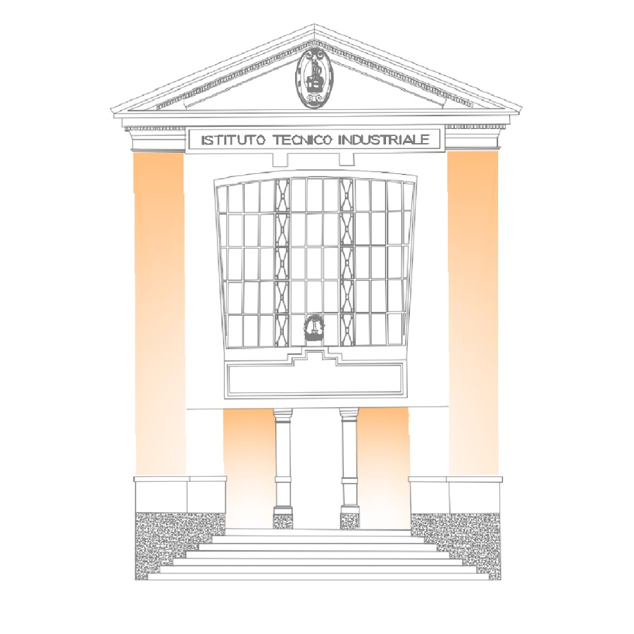
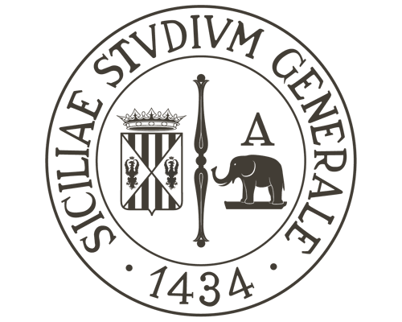
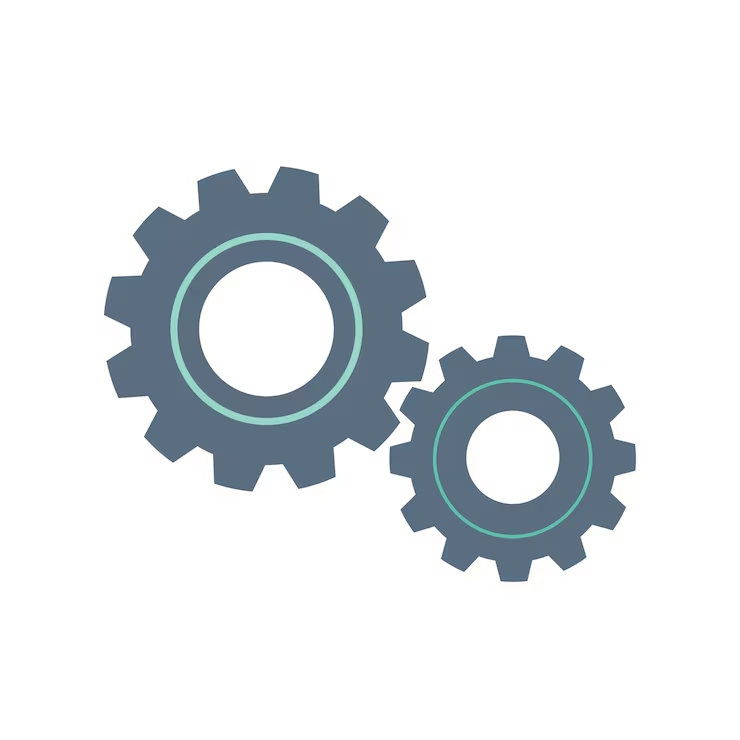
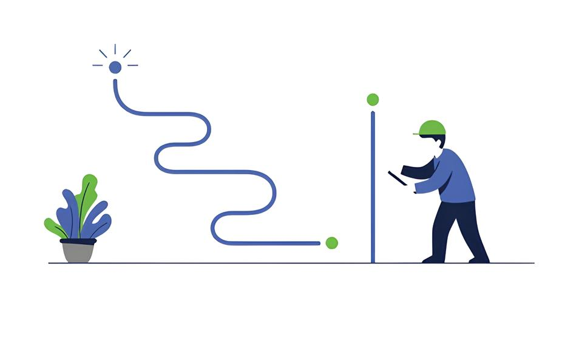
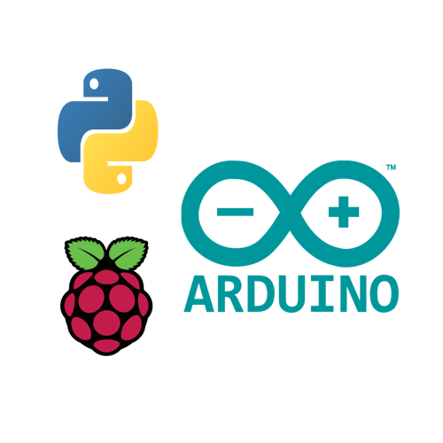

Istruzione ed Esperienza

IT Archimede
La base della mia formazione tecnica in elettronica e robotica.
- Studio e progettazione di impianti elettrici ed elettronici
- Utilizzo strumentazione di laboratorio e metodi di misura
- Analisi macchine elettriche e sistemi di interfacciamento
- Gestione processi produttivi aziendali
- Linguaggi di programmazione per ambiti specifici
- Progettazione sistemi automatici e circuiti elettronici

Università di Catania
Studi accademici in Ingegneria dell'Informazione.
- Bioingegneria e paradigma Object-Oriented
- Basi di dati, web programming e protocolli Internet
- Sistemi embedded, IoT ed elaborazione segnali
- Elettronica analogica/digitale e automazione
- Modellizzazione matematica e analisi economico-gestionale

Esperienze Lavorative
Archivio delle mie esperienze operative.
- Sviluppo script per automazione attività
- Manutenzione rete informatica aziendale
- Supporto amministrativo e gestione contratti
Chi sono:
Ingegnere Informatico e Appassionato di Innovazione Tecnologica.
Sono Morgan Scollo, laureato presso l’Università di Catania con una solida base come Perito Elettronico. Mi occupo dell’intersezione tra software, elettronica e bioingegneria.

Il mio Percorso:
Diplomato con 100/100 e lode, ho partecipato alle competizioni RoboCup per tre anni. La mia tesi si è focalizzata sulla Intra-Body Communication (IBC) e ho contribuito a una pubblicazione scientifica su Frontiers in Neuroscience nel 2026.

I miei progetti:
Bioingegneria: Analisi espressione genica post-ictus tramite Python.
Web: Applicazione full-stack in Laravel con gestione database MySQL.
Computer Vision: Riconoscimento armi con YOLOv8 su drone e notifiche Telegram.
Corsi e certificazioni
- Human Physiology – Duke University (2025)
- Calcolo Scientifico Python – UniPD (2025)
- Patente Radioamatore Classe A (2025)
- Patentino Drone EASA A1–A3 (2022)
